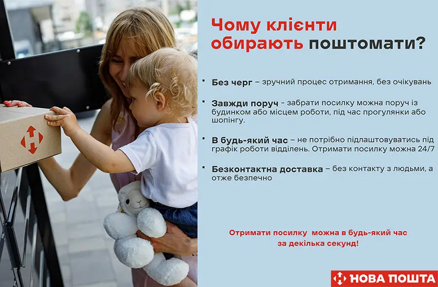

Доставка «Новою поштою» до відділення
Відправлення товару Новою поштою здійснюється щоденно, крім п'ятниці та неділі. Якщо замовлення оформлено до 14:00, воно буде відправлено Новою поштою того ж дня. Після відправки товару Вам буде надіслано повідомлення на телефон з № ТТН для отримання товару. На відділенні посилка зберігається 6 КАЛЕНДАРНИХ ДНІВ! На сьомий день посилку буде повернуто відправнику. Тому отримати посилку потрібно максимум на шостий день після прибуття її на відділення.
Якщо не встигаєте - телефонуйте нам, щоб продовжити зберігання.
Доставка «Новою поштою» до поштомату
Терміни доставки посилок Новою поштою до поштомату такі ж, як і у відділення. У поштоматі посилка зберігається ТРИ дні, після чого переміщається на найближче відділення! На сьомий день посилку буде повернуто відправнику. Акція: БЕЗКОШТОВНА ДОСТАВКА В ПОШТОМАТ, якщо в замовленні є сукня.
